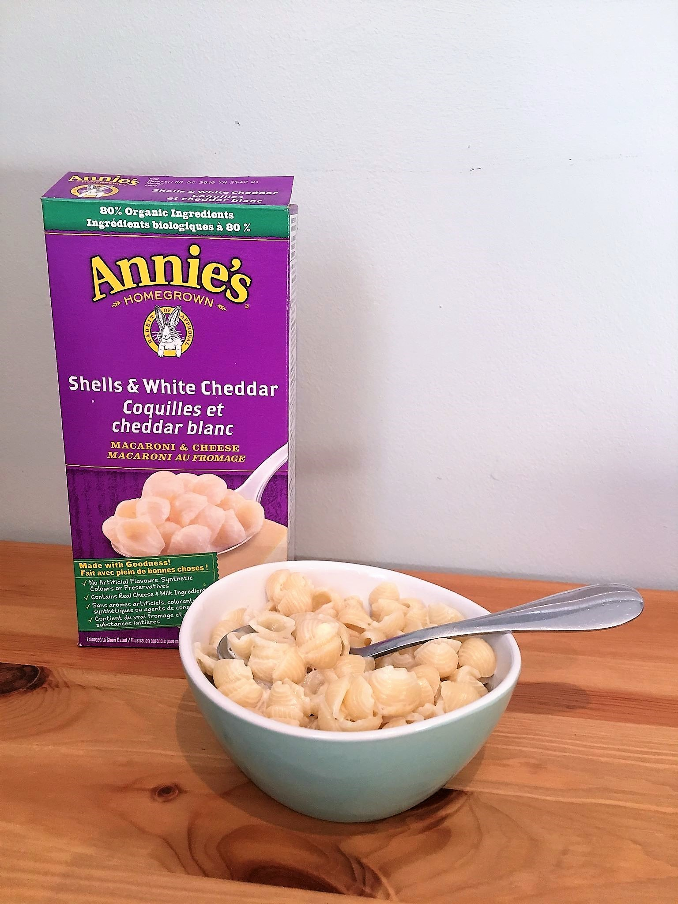

Fancy Annie's

Description
This recipe is a Todd classic, best used when you have nothing planned or at the end of the week to use your leftover veggies. If you can make Annie's you can make this recipe! It's that easy! While you boil water for your Annie's, chop up any veggies you want in it (I suggest kale, bell peppers, onions, and garlic). Then sautee up your veggies while your Annie's cook, add a can of tuna at the end, mix it all together, and enjoy!
Ingredients
- 1 box Annie's Mac 'n Cheese (or your favorite mac 'n cheese brand)
- Milk (for the mac 'n cheese)
- Butter (for the mac 'n cheese)
- Cooking oil
- Leftover/in-season veggie (Zucchini, bell peppers, kale, spinach, etc.)
- Canned tuna
Steps
- Bring small pot of water to boil
- Meanwhile, prep veggies
- Cook Annie's according to instructions on box
- Heat oil in pan
- Sautee veggies in pan
- Add tuna to pan and cook until hot
- Add the veggies and tuna to the Annie's and mix
- Artfully plate and enjoy!
Return to Homepage